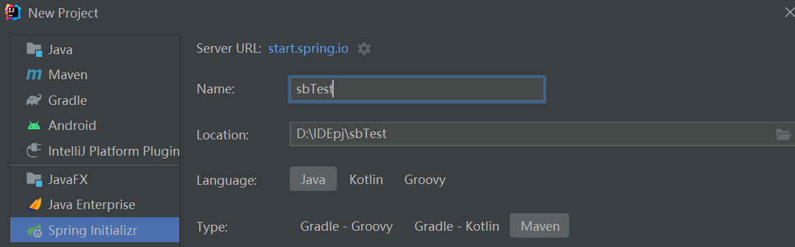
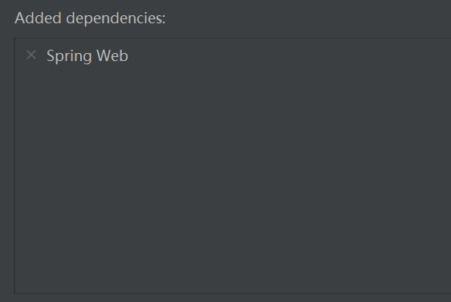

Spring 初体验：
俗话说“没学过spring等于没学过Java”，spring在Java领域的地位可见一斑。在Java中，Spring是一个开源的应用程序框架，用于构建企业级Java应用程序。它提供了一个轻量级的、非侵入性的编程和配置模型，用于开发灵活、可扩展的应用程序。笔者Java水平很低，但由于课程的原因写了好久的Java代码，顺便学习一下spring吧。
spring boot项目创建
个人认为，学习Java最好的工具就是IDEA，颜值高功能齐全，除了配置要求高容易卡没缺点，当然eclipse也有轻量级的优势吧。IDEA的专业版可以用学生认证免费获得。
直接用IDEA的spring initializr来创建一个新的spring项目。

初学者的话，只选一个spring web也不是不行啦。这里的spring boot最新版本最老只支持JDK 17，后续编译运行会有
错误: 无效的源发行版：17
因此如果java版本老的可以选老的spring boot版本。解析maven依赖的时间还挺久的，如果实在太慢可以参考网络上的教程。右键pom.xml，选择maven，新建settings.xml，然后添加镜像。

创建以后，自带一个有主函数的java文件：

hello world！
私以为，学习web框架中运行一个简单的web服务器等价于学习编程语言输出hello world。创建一个控制器类，用于处理HTTP请求并返回响应。你可以使用@Controller或@RestController注解进行标记，并定义相应的请求处理方法。

运行main方法，默认端口为8080，访问http://localhost:8080/hello，可以看到返回的“你好世界”。

访问html静态页面
正常的web服务器一般不会返回单个字符串，而是返回一个html页面。要让spring boot服务器能输出html页面，首先要将我们的html文件放到src\main\resources文件夹中。

staic文件夹存放静态资源，资源文件会直接暴露给外部访问，不经过模板引擎的处理。templates文件夹存放模板文件，通过模板引擎进行解析和渲染，最终生成HTML响应。模板文件通常包含动态内容、模板语法和模板表达式，可以与后端数据进行交互。
启动服务器，通过url:localhost:8080/index.html来访问static文件夹中的index.html文件。

要正常访问templates文件夹，需要添加thymeleaf依赖。在pom.xml中添加以下内容：
1
2
3
4
5
|
<dependency>
<groupId>org.springframework.boot</groupId>
<artifactId>spring-boot-starter-thymeleaf</artifactId>
</dependency>
|
新添加一个控制器类：
1
2
3
4
5
6
7
8
9
10
| import org.springframework.stereotype.Controller;
import org.springframework.ui.Model;
import org.springframework.web.bind.annotation.RequestMapping
@Controller
public class MyController {
@RequestMapping("/home")
public String home(Model model) {
return "index2";
}
}
|
这样，通过localhost:8080/home也可以访问index2.html文件了。

注意到上文的代码中，出现了两种控制器类，即@RestController和@Controller,@Controller注解表示该类是一个控制器（Controller），用于处理HTTP请求并生成相应的响应。它可以返回HTML视图、JSON数据等多种形式的响应。@RestController注解是@Controller注解的特殊形式，它结合了@Controller和@ResponseBody注解的功能。@RestController注解用于创建RESTful风格的控制器，专门用于返回JSON或XML格式的响应数据。如果要用@Controller返回字符串数据，必须还要添加@ResponseBody。
动态生成HTML内容
spring boot可以通过模板动态渲染html页面，和django有点类似。
修改index2.html的内容:
1
2
| <h1>index2</h1>
<p th:text="${data}"></p>
|
控制器类中添加新方法：
1
2
3
4
5
| @RequestMapping("/dynamic")
public String DynamicPage(Model model){
model.addAttribute("data","qwq");
return "index2";
}
|
运行项目，访问localhost:8080/dynamic：

Thymeleaf还有很多功能强大的语法，在此不再赘述。
解析get请求参数
在Spring Boot中，可以使用@RequestParam注解或HttpServletRequest对象来解析URL中的参数，并返回特定参数的值。
在控制器类添加方法:
1
2
3
4
5
6
7
8
9
10
11
| @GetMapping("/param1")
@ResponseBody
public String ParamParse1(@RequestParam("a") String param){
return param;
}
@GetMapping("/param2")
@ResponseBody
public String ParamParse2(HttpServletRequest r){
return r.getParameter("a");
}
|
运行项目。


处理post请求
在Spring Boot中，可以使用@RequestParam注解或@RequestBody注解来获取POST方法的数据。
1
2
3
4
5
6
7
8
9
10
| @PostMapping("/post1")
@ResponseBody
public String Post1(@RequestParam("data") String data) {
return data;
}
@PostMapping("/post2")
@ResponseBody
public String Post2(@RequestBody String data) {
return data;
}
|
运行项目，用curl发送post请求。


访问MySQL数据库
访问数据库也是web服务器的基本功能之一。
首先在pom.xml中添加依赖：
1
2
3
4
5
6
7
8
9
| <dependency>
<groupId>mysql</groupId>
<artifactId>mysql-connector-java</artifactId>
<version>8.0.26</version>
</dependency>
<dependency>
<groupId>org.springframework.boot</groupId>
<artifactId>spring-boot-starter-jdbc</artifactId>
</dependency>
|
在application.properties中添加以下内容，username、password等根据实际情况修改。
1
2
3
4
| spring.datasource.url=jdbc:mysql://localhost:3306/dbname
spring.datasource.username=username
spring.datasource.password=password
spring.datasource.driver-class-name=com.mysql.cj.jdbc.Driver
|
新建DataBaseConfig.java:
1
2
3
4
5
6
7
8
9
10
11
12
13
14
15
16
17
18
19
20
21
22
23
24
25
26
27
28
29
30
31
32
33
34
35
36
37
38
| import org.springframework.beans.factory.annotation.Value;
import org.springframework.context.annotation.Bean;
import org.springframework.context.annotation.Configuration;
import org.springframework.jdbc.core.JdbcTemplate;
import org.springframework.jdbc.datasource.DriverManagerDataSource;
import javax.sql.DataSource;
@Configuration
public class DataBaseConfig {
@Value("${spring.datasource.url}")
private String url;
@Value("${spring.datasource.username}")
private String username;
@Value("${spring.datasource.password}")
private String password;
@Value("${spring.datasource.driver-class-name}")
private String driverClassName;
@Bean
public DataSource dataSource() {
DriverManagerDataSource dataSource = new DriverManagerDataSource();
dataSource.setUrl(url);
dataSource.setUsername(username);
dataSource.setPassword(password);
dataSource.setDriverClassName(driverClassName);
return dataSource;
}
@Bean
public JdbcTemplate jdbcTemplate(DataSource dataSource) {
return new JdbcTemplate(dataSource);
}
}
|
在需要访问数据库的组件或服务中，注入JdbcTemplate并使用其方法执行数据库操作。创建MyService.java:
1
2
3
4
5
6
7
8
9
10
11
12
13
14
15
16
17
18
19
| import org.springframework.jdbc.core.JdbcTemplate;
import org.springframework.stereotype.Service;
import java.util.List;
import java.util.Map;
@Service
public class MyService {
private final JdbcTemplate jdbcTemplate;
public MyService(JdbcTemplate jdbcTemplate) {
this.jdbcTemplate = jdbcTemplate;
}
public List<Map<String, Object>> getAllData() {
String query = "SELECT * FROM users";
return jdbcTemplate.queryForList(query);
}
}
|
再在控制器类中添加如下内容：
1
2
3
4
5
6
7
8
9
| private final MyService myService;
public MyController(MyService myService) {
this.myService = myService;
}
@GetMapping("/db")
@ResponseBody
public List<Map<String, Object>> getDatabaseData() {
return myService.getAllData();
}
|
启动项目，访问localhost:8080/db:

总结：
以上内容足够用spring boot搭建一个有正常功能的web服务器，路漫漫其修远兮，之后还要对spring进行更深入的学习。有时间再更新吧。